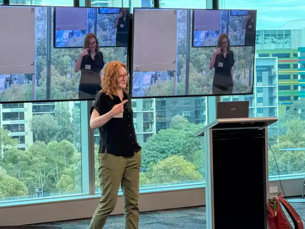
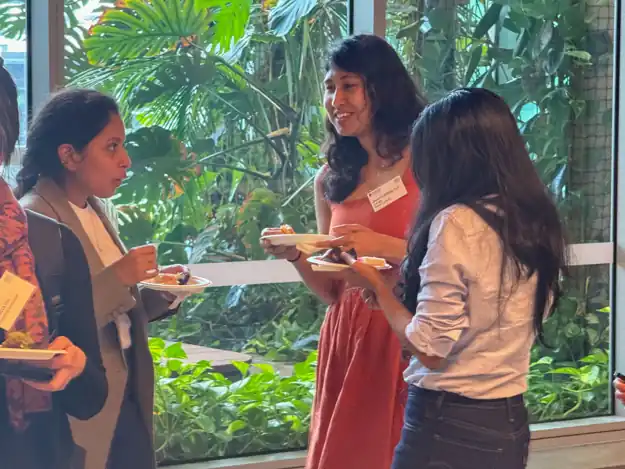
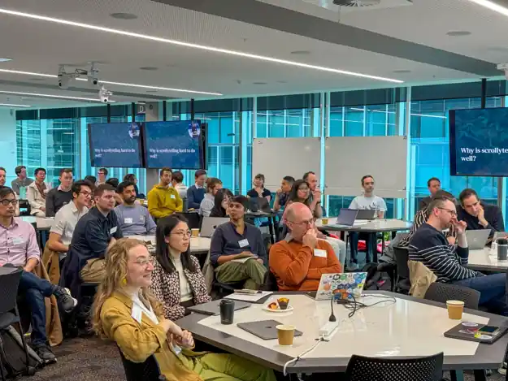
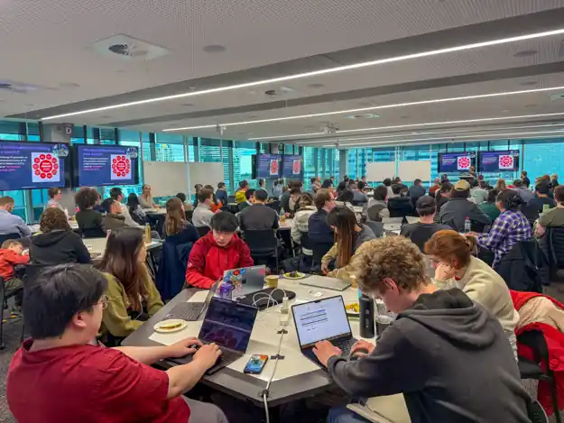
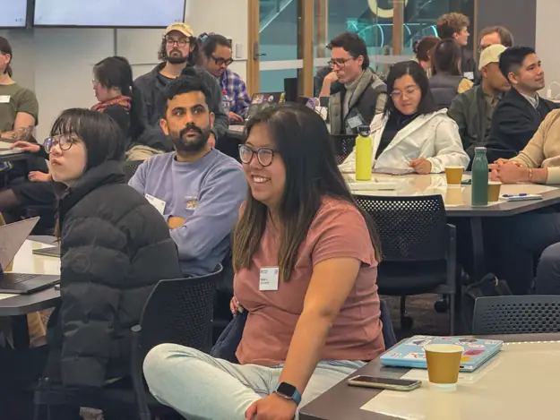
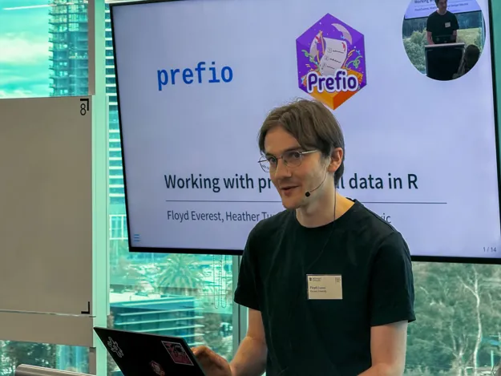
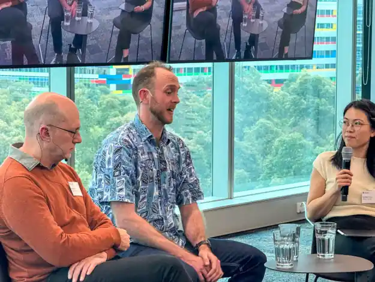
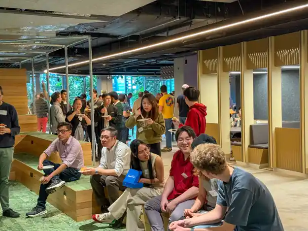
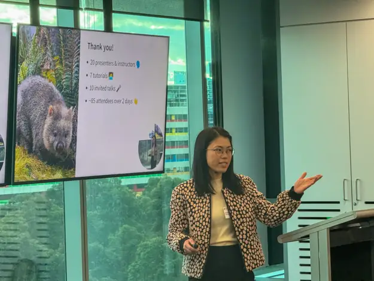

WOMBAT
Workshop Organised by the Monash Business Analytics Team
30 Nov – 1 Dec 2026 · Melbourne, Australia
Learn and discuss open-source tools for business analytics and data science.
Keynote
Rob J Hyndman
Professor of Statistics
Department of Econometrics and Business Statistics
Monash Business School
Spotting the weird ones
Data analysis is about finding the stories hidden in the mass of information that make up a data set. Usually we are interested in understanding the major patterns and the relationships that hold true for most of the data. But sometimes we need to look at the weird observations, the mavericks, the ones that don’t follow the crowd and behave differently. These observations are called ‘anomalies’.
I will describe a principled statistical approach to identifying anomalies in diverse data sets, from simple numerical data to complex high-dimensional data objects. The ideas will be illustrated using the {weird} package for R applied to several data analysis problems, including spotting over-priced wines, identifying errors in the records of the Old Faithful Geyser, and uncovering forgotten epidemics in 19th century France.
About Rob J Hyndman
Prof Hyndman holds the position of Vice-Chancellor’s Distinguished Professor of Statistics at Monash University, and is an internationally recognised expert in time series forecasting.
He is a prolific writer, having authored more than 200 research papers and five books in statistical science, and has won awards for his research, teaching, consulting, and graduate supervision.
His commitment to open research and teaching with open-source statistical software and online learning materials has had a major impact on the accessibility and practice of forecasting.
Program
Reproducibility


Publishing

Analysis


Time Series


Showcase


Conversation


Community @ WOMBAT
WOMBAT isn't just about the talks. It's about the people in the room.
Join the conversation between sessions and meet your fellow analysts.









Got a question?
Reach out to us with any question you have!
Send a message